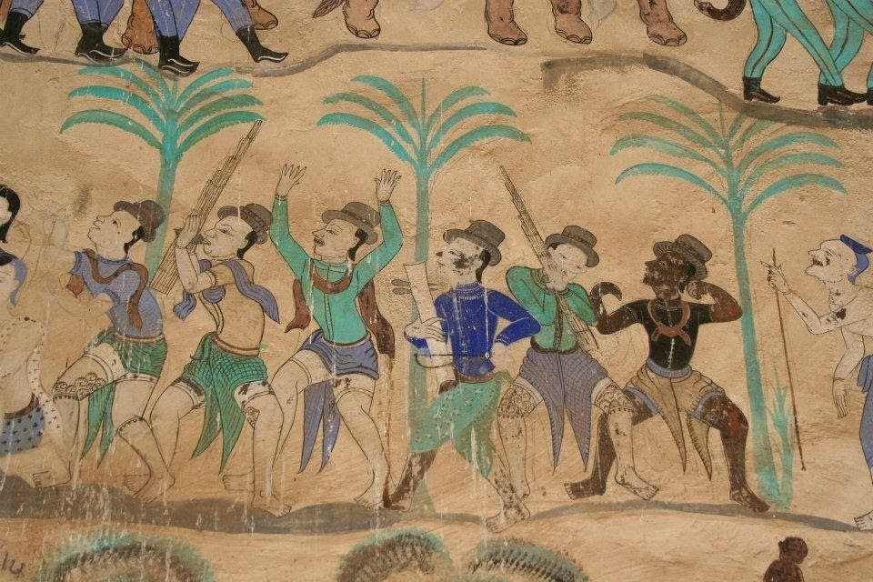
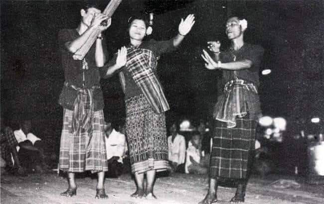
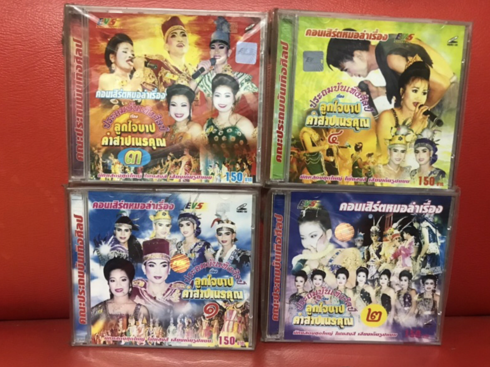
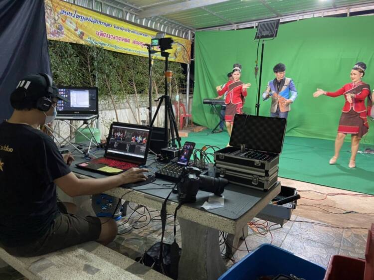

วิวัฒนาการของหมอลำ
หมอลำในฐานะเครื่องมือที่ผู้คนในวัฒนธรรมลาวใช้บอกเล่าเรื่องราว
ประเพณี และความเชื่อนั้นมีมาอย่างยาวนาน
และได้มีการเปลี่ยนแปลงอยู่ตลอดเวลา
และเพื่อเข้าใจการเปลี่ยนแปลงของหมอลำนั้น
เราสามารถจัดแบ่งช่วงเวลาการเปลี่ยนแปลงของหมอลำออกได้เป็น 5 ยุค
ยุคที่ 1 ก่อนปี 2500

เป็นยุคของ “หมอลำพื้น” ซึ่งถือเป็นยุคกำเนิดของหมอลำหมู่ในปัจจุบัน
หมอลำพื้นจะเป็นการแสดงด้วยหมอลำคนเดียวและแสดงทุกบทบาทในตัวคน ๆ
เดียว จุดเปลี่ยนสำคัญของหมอลำยุคแรก
คือหมอลำพื้นได้รับความนิยมน้อยลง
สาเหตุหนึ่งอาจจะมาจากการเข้ามาของสื่อวิทยุ และโทรทัศน์
ทำให้หมอลำต้องปรับตัวให้มีการแสดงที่สมบทบาท
มีคนแสดงครบตามบทเพื่อเหมือนจริง
ยุคที่ 2 ช่วงปี 2500-2515

คือ ยุคของ “หมอลำหมู่” หรือ “หมอลำเรื่องต่อกลอน”
มีการกระจายบทบาทการแสดงให้ มีตัวแสดงที่หลากหลายขึ้น
มีการเดินเรื่องให้กระชับและสมบทบาทมากขึ้น และในยุคนี้มีการว่าจ้าง
การแสดงที่ชัดเจน จุดเปลี่ยนสำคัญของยุคที่สอง คือ
กระแสของเพลงลูกทุ่งภาคกลาง ลิเกภาคกลาง
และการแสดงโชว์ในคอนเสิร์ตลูกทุ่ง
ได้รับความนิยมเป็นอันมากในหมู่คนอีสาน
หมอลำหมู่จึงได้นำเอารูปแบบแสดงโชว์และการแสดงคอนเสิร์ตมาแสดงในช่วงครึ่งแรกของช่วงการแสดงเพื่อเรียก
ผู้ชมและหลังจากนั้นจึงต่อด้วยหมอลำเรื่องต่อกลอน
ยุคที่ 3 ช่วงปี 2516-2535

เป็นยุคที่หมอลำหมู่ได้รับความนิยม จนถึงขีดสุด
มีคณะหมอลำเกิดขึ้นกว่าร้อยคณะในภาคอีสานโดยเฉพาะในพื้นที่จังหวัดขอนแก่น
เริ่มมี นายทุนเข้ามาสนับสนุนธุรกิจหมอลำ
มีการตั้งสำนักงานหมอลำที่เป็นแหล่งให้บริการว่าจ้างหมอลำ เต็มรูปแบบ
ในยุคนี้เริ่มมีธุรกิจบันทึกเสียงและวิดีโอการแสดงหมอลำเพื่อนำไปออกอากาศใน
สถานีโทรทัศน์และสถานีวิทยุ
ผู้ชมมีช่องทางเข้าถึงหมอลำได้หลากหลายขึ้นนอกจากการแสดงสดในพื้นที่
และถือเป็นจุดเปลี่ยนสำคัญ
ที่หมอลำได้ก้าวสู่ยุคแห่งการเป็นอุตสาหกรรมบันเทิงอย่างเต็มรูปแบบ
ยุคที่ 4 ช่วงปี 2535-2559

เป็นยุคของความเจริญก้าวหน้าของธุรกิจหมอลำทั้งในรูปแบบการแสดง
รูปแบบการบริหารวง และรูปแบบการติดต่อประสานงาน
จุดเปลี่ยนสำคัญของยุคนี้คือ
หมอลำก้าวเข้าสู่ยุคคอนเสิร์ตลูกทุ่งหมอลำเต็มรูปแบบ
มีการกำหนดมาตรฐานราคาจ้างทำการแสดง
การบริหารจัดการวงมีความเป็นองค์กรและมีความมืออาชีพมากขึ้น
อีกจุดที่น่าสนใจของยุคนี้คือ คณะหมอลำที่มีการลงทุนถึงไป “รอด”
และยืนอยู่ได้ ขณะที่หลายคณะขาดทรัพยากรและแหล่งทุนก็ถึงขั้น “ร่วง”
และปิดตัวไป แต่ความนิยมในการรับชมการแสดงหมอลำกลับไม่ถดถอย
เริ่มมีผู้ชมที่มาจากหลากหลายช่วงวัยสนใจชมหมอลำมากขึ้น
ซึ่งแต่เดิมการดูหมอลำมักมองว่าเป็นเรื่องของคนสูงอายุเท่านั้น
ยุคที่ 5 ช่วงปี 2560-2564

ในยุคปัจจุบันหลายคนเรียกหมอลำในยุคนี้ว่าเป็น ยุคหมอลำออนไลน์
เป็นจุดเปลี่ยนสำคัญของวงการหมอลำ (ก่อนโควิด-19)
ที่ศิลปินและผู้ประกอบการธุรกิจหมอลำเริ่มปรับตัวให้เข้ากับยุคที่เทคโนโลยีดิจิทัลเข้ามาปั่นป่วน
(disruption)
มีการนำเครื่องมือและแพลตฟอร์มออนไลน์เข้ามาสื่อสารและนำเสนอผลงานกับ
กลุ่มเป้าหมายที่ขยายขอบเขตมากขึ้นจนทำให้คนทั่วทุกมุมโลกสามารถเข้าถึงหมอลำได้
เมื่อการแพร่ระบาดของโควิด-19
เข้ามาแบบไม่ทันตั้งตัวก็ทำให้เกิดผลกระทบต่อการแสดงของหมอลำเป็นอย่าง
มากอันเนื่องจากมาตรการของรัฐและการไม่กล้าจัดกิจกรรมของเจ้าภาพ
จึงเป็นอีกจุดเปลี่ยนสำคัญใน ประวัติศาสตร์ของหมอลำ คือ
หมอลำก้าวสู่พื้นที่ออนไลน์อย่างเต็มรูปแบบ
ภายใต้การดิ้นรนเพื่อความอยู่รอดและเพื่อปากท้องของคนหลายร้อยชีวิตในแต่ละวง
ก็เกิดนวัตกรรมบนพื้นที่เสมือน (virtual) ขึ้น
ซึ่งถือว่าเป็นข้อได้เปรียบของหมอลำที่มีการเตรียมตัวและปรับตัวในรูปแบบออนไลน์มาก่อนหน้าการแพร่ระบาดของโควิด-19
จากพลวัตรของหมอลำที่ผ่านมาทั้ง 5 ยุค
ประเภทของหมอลำที่ยังคงได้รับความนิยมอย่างมากคือ หมอลำเรื่องต่ำกลอน
และด้วยความนิยมในหมอลำกลอนประเภทนี้
จึงได้มีงานศึกษามูลค่าทางเศรษฐกิจอยู่บ้างยกตัวอย่างเช่น ผศ.ดร.ศิวาพร
ฟองทอง และคณะ (2565) และ ปาณิส โพธิ์ศรีวังชัย (2564) โดยงานศึกษาทั้ง
2
ชิ้นนี้ได้เสนอล้วนแล้วแต่เสนอให้มีการสนับสนุนและพลักดันหมอลำในฐานะหนึ่งในเครื่องยนต์ทางวัฒนธรรมที่จะสร้างมูลค่าทางเศรษฐกิจได้
![ส่วนใหญ่เป็นเพศหญิงหรือเพศที่ 3 มีอายุ 40-65 ปี ส่วนใหญ่ยังอยู่ในวัยทำงานหรือทำธุรกิจส่วนตัว บางส่วนเกษียณอายุแล้ว ในด้านฐานะทางการเงินไม่มีภาระค่าใช้จ่ายมากนัก ลูกหลานสามารถดูแลตัวเองได้แล้ว หรือลูกหลานสามารถให้การสนับสนุนเรื่องทุนทรัพย์ในการมาดูหมอลำได้ แม่ยกหมอลำมีการรวมกลุ่มกันเวลามาชมหมอลำ มักจะมาหาศิลปินหลังเวที โดยนำอาหารหรือของฝากมาให้ศิลปิน มีการให้มาลัยกับศิลปินหรือบางครั้งมีการ รวบรวมเงินเพื่อให้ได้มาลัยพวงใหญ่ และคล้องมาลัยศิลปินในนามของกลุ่มแม่ยก ในส่วนของความชื่นชอบการแสดงของหมอลำนั้นกลุ่มแม่ยกชอบดูลำเรื่องต่อกลอนและช่วงคอนเสิร์ต โดยจะชอบฉากหรือเพลงที่ศิลปินที่ตนเองชื่นชอบแสดงมากเป็นพิเศษ](asset/popup-image-4.png)
![กลุ่มแม่ยกต่างประเทศส่วนใหญ่เป็นหญิงชาวอีสานที่ต้องไปอาศัยหรือทํางานที่ ต่างประเทศ อายุประมาณ 40 ปีขึ้นไป บางส่วนทำธุรกิจในต่างประเทศ เช่น ร้านอาหารไทย ร้านนวด แผนไทย มีฐานะการเงินที่ค่อนข้างดีจึงสามารถให้มาลัยศิลปินในมูลค่าสูง โดยมาลัยมีตั้งแต่หลักพัน จนถึงหลักแสน บางครั้งให้รางวัลเป็นสินทรัพย์มูลค่าสูงประเภทอื่น เช่น ทองคำ นอกจากมีความชื่น ชอบในตัวศิลปินแล้วผู้ชมกลุ่มนี้ยังมีความคิดที่อยากจะช่วยคณะหมอลำในการอนุรักษ์วัฒนธรรม อีสาน หรือคิดถึงบ้านเกิดเมื่อได้ชมหมอลำออนไลน์ผ่าน Facebook หรือ YouTube มีการให้มาลัย โดยการโอนเงินให้กับศิลปินโดยตรง หรือขอให้หัวหน้าคณะหมอลำช่วยดำเนินการให้ ส่วนของความ ชื่นชอบการแสดงของหมอลำนั้นกลุ่มแม่ยกชอบดูลำเรื่องต่อกลอนและช่วงคอนเสิร์ต โดยจะชอบฉาก หรือเพลงที่ศิลปินที่ตนเองชื่นชอบแสดงมากเป็นพิเศษ และจะสามารถดูซ้ำ ๆ ในช่วงการแสดงที่ตนชอบได้](asset/popup-image-2.png)
![แฟนคลับศิลปินหมอลำ ส่วนใหญ่อยู่ในวัยเรียนหรือทำงาน มีอายุไม่เกิน 40 ปี มีทุกเพศ จะชื่นชอบหรือให้การสนับสนุนผลงานการแสดงของศิลปินที่ตนเองชื่นชอบ กลุ่มแฟน คลับหมอลำบางส่วนที่มีความสามารถในการถ่ายภาพ การแต่งหน้าทำผม จะมาอาสาช่วยศิลปินใน การแต่งตัวหลังเวทีในบางครั้ง มีการซื้อของฝากไปฝากศิลปินหลังเวที กลุ่มที่มีความสามารถถ่ายภาพ มีความสำคัญในการประชาสัมพันธ์หมอลำในสังคมออนไลน์ โดยนำไปลงเพจต่างๆ ที่เกี่ยวกับหมอลำ และมีการทำของที่ระลึกให้ศิลปินบ้าง เช่น รูป ช่อดอกไม้ ตุ๊กตา ให้รางวัลศิลปินบ้างในบางครั้งใน มูลค่าหลักร้อยถึงหลักพัน ติดตามชีวิตส่วนตัวของศิลปินในสังคมออนไลน์ ในส่วนของความชื่นชอบ การแสดงของหมอลำนั้น กลุ่มแฟนคลับศิลปินชอบดูลำเรื่องต่อกลอนและช่วงคอนเสิร์ต โดยจะชอบ ฉากหรือเพลงที่ศิลปินที่ตนเองชื่นชอบแสดงมากเป็นพิเศษ กลุ่มแฟนคลับศิลปินจะรวมกลุ่มกับแม่ยก สร้างกลุ่มแฟนคลับศิลปินในเฟซบุ๊ก เพื่ออัปเดตข่าวสารศิลปิน และนัดรวมกลุ่มกันเพื่อมาให้กำลังใจ กับศิลปินหน้าเวทีการแสดงแฟนคลับหมอลำกลุ่มแฟนคลับหมอลำ เป็นกลุ่มผู้ชมที่มีอายุ 20 - 45 ปี มีทุกเพศ ประกอบ อาชีพอิสระหรือทำงานประจำแล้ว มีความชื่นชอบและติดตามหมอลำที่หน้าเวที และสังคมออนไลน์ ด้วย เชื่อว่าการดูหมอลำเป็นการช่วยอนุรักษ์ศิลปวัฒนธรรมอีสาน และให้ความสุขสนุกสนาน ความ ผ่อนคลายกับตนเองได้ ถึงแม้จะสนับสนุนให้อนุรักษ์วัฒนธรรมก็ยังมีความชอบในความทันสมัย การ เพิ่มเทคโนโลยีต่าง ๆ ประกอบการแสดงให้ความสมจริง หรืออยากดูการแสดงบางเพลงที่อยู่กำลังอยู่ ในกระแสความชอบของสังคมในปัจจุบัน ชอบดูการแสดง มีความใส่ใจรายละเอียดของการแสดง หรือ องค์ประกอบของการแสดง สามารถให้แสดงความคิดเห็นเกี่ยวกับองค์ประกอบหรือรูปแบบการแสดง ที่ควรชื่นชมและส่วนที่ควรนำมาปรับปรุงแก้ไขได้ แต่มีความศรัทธาในหัวหน้าคณะหมอลำ และคนทำ โชว์ด้านวัฒนธรรม สามารถเดินทางเพื่อมาชมหมอลำได้ ในวันสำคัญของคณะหมอลำที่ตนเองชื่นชอบ เช่น เปิดฤดูกาล ปิดฤดูกาล หรือเดินทางในระยะทางไกลเพื่อมาดูหมอลำในวันหยุด (คืนวันศุกร์-เสาร์) ถ้ามีหมอลำมาทำการแสดงในพื้นที่ใกล้เคียง ไม่ว่าคณะใดหรือแม้จะไม่ใช่วันหยุดก็จะเข้าชมหมอลำ ในส่วนของความชื่นชอบการแสดงของหมอลำนั้นกลุ่มแฟนคลับหมอลำา ชอบดูทุกช่วงการแสดงตลอด ทั้งคืนซึ่งได้แก่ โชว์คอนเสิร์ต โชว์วัฒนธรรม ตลก ลำเรื่องต่อกลอน เต้ย ถึงแม้จะบางส่วนยังอยู่ใน วัยรุ่นหรือวัยทำงานแต่ก็ยังชอบดูลำเรื่องแต่อยากให้ปรับการลำเรื่องให้กระชับ ซึ่งกลุ่มนี้จะมีค่าใช้จ่าย ในการชมหมอลำประมาณ ประมาณ 150 – 1,000 บาท](asset/popup-image-3.png)


![ผู้ชมกลุ่มใหม่ เป็นกลุ่มวัยรุ่นและวัยเริ่มต้นทํางาน เพศหญิงและเพศทางเลือก อายุ 15-25 ปีที่ชื่นชอบศิลปินอื่นๆ เช่น ศิลปินเกาหลี โดยส่วนใหญ่กลุ่มคนเหล่านี้จะเริ่มสนใจศิลปิน จากผลงานเพลง หรือบุคลิกหน้าตาที่ดึงดูด แล้วนำไปสู่การค้นหาคอนเทนต์ที่เกี่ยวข้องกับศิลปิน เพื่อ ติดตามวิถีชีวิตและพัฒนาการของศิลปิน อีกทั้ง ต้องการเข้าชมคอนเสิร์ตของศิลปินที่ชื่นชอบเพื่อ พบปะและมีปฏิสัมพันธ์กับศิลปิน นอกจากนี้ยังต้องการจัดคอนเสิร์ตที่มีความสนุกสนานและความตื่น ตาตื่นใจของโปรดักชัน ซึ่งกลุ่มนี้จะมีค่าใช้จ่ายในการชมคอนเสิร์ตตั้งแต่ 6,000 – 10,000 บาท](asset/popup-image-6.png)